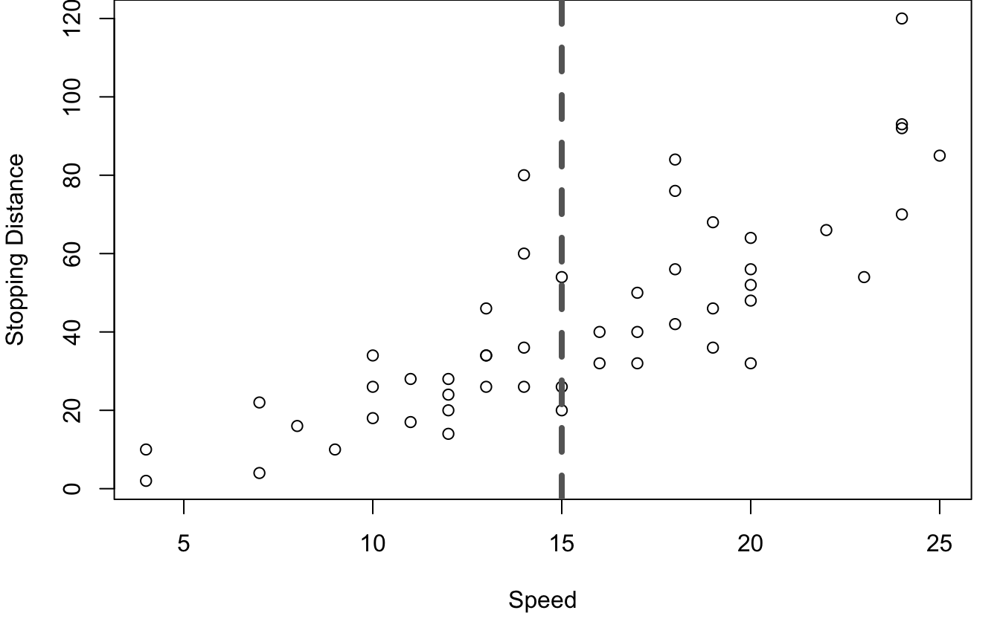
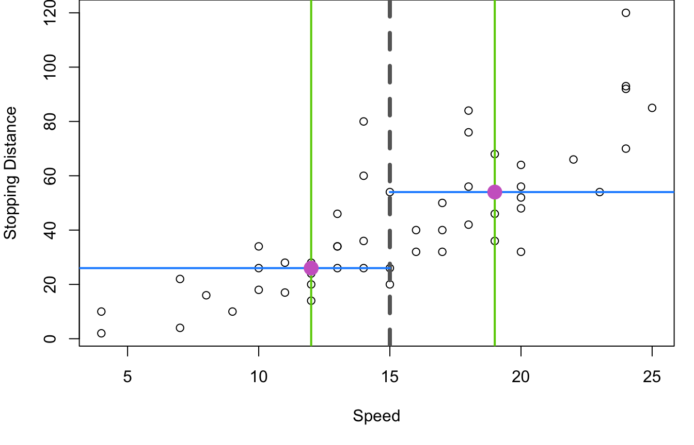
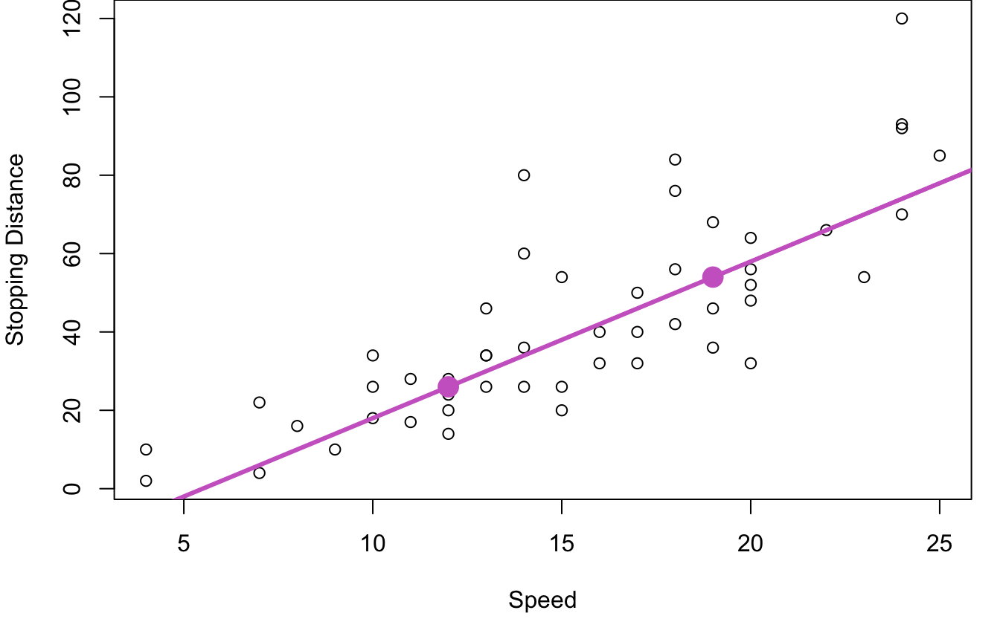
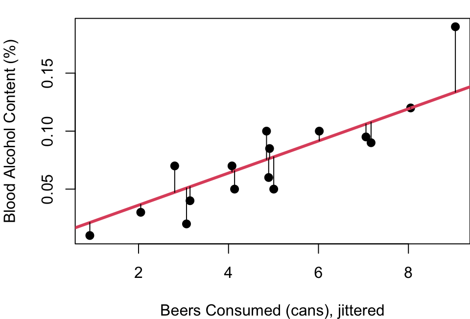
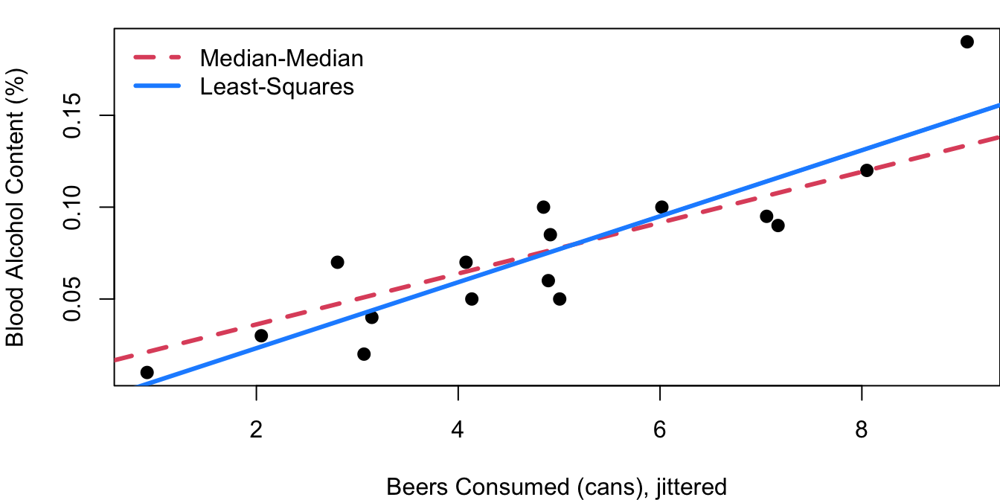
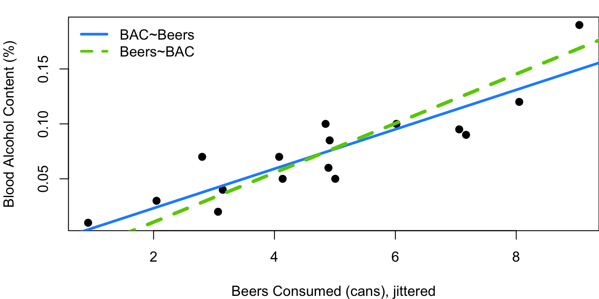
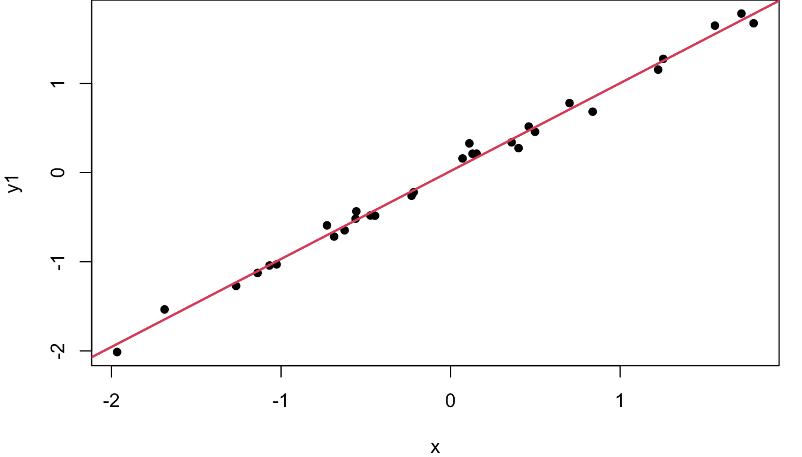
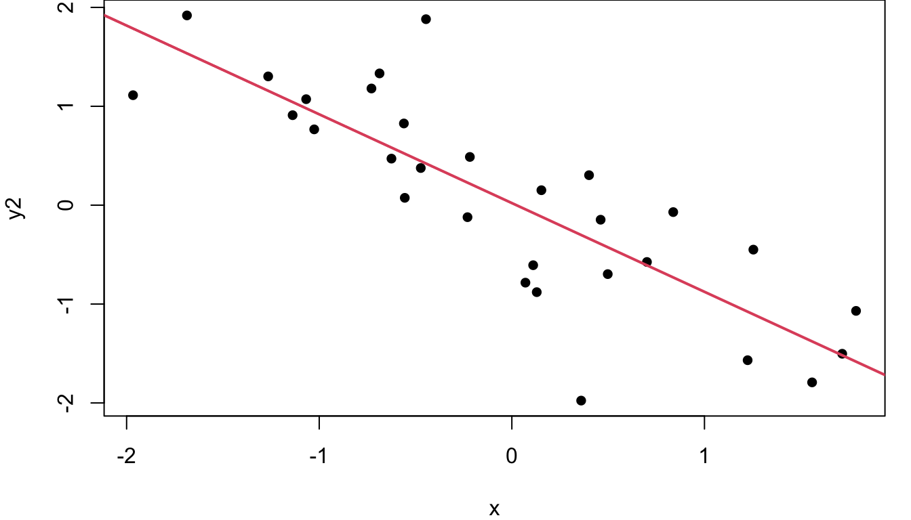
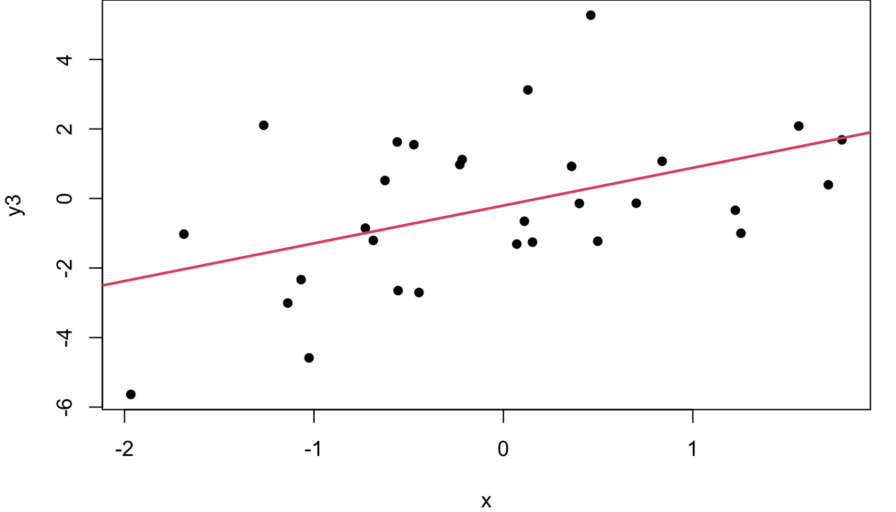

# make initial scatterplot to begin
plot(cars$speed, cars$dist, xlab="Speed", ylab="Stopping Distance")
# step 1: calculate the median, 1st quartile and 3rd quartile of X, weight
quartx<-quantile(cars$speed, c(.5, .25, .75))
# step 2: calculate the median Y of points to the left of the median X
med_y_left<-median(cars$dist[cars$speed<=quartx[1]])
# step 3: calculate the median Y of points to the right of the median X
med_y_right<-median(cars$dist[cars$speed>=quartx[1]])
# step 4: Add points and line connecting them
points(quartx[2:3], c(med_y_left, med_y_right), pch=16, col=2)
slope<-(med_y_right-med_y_left)/(quartx[3]-quartx[2])
intercept<-med_y_left-(slope*quartx[2])
abline(intercept, slope, col="orchid3", lwd=3)2 Add a Line
2.1 Describing the Relationship with a Line
With a scatterplot in front of you and a linear trend evident the obvious next step is to draw a line on your plot. We begin with a simple method for fitting a line to a scatterplot that is easy to compute in four steps:
Calculate the median, 1st quartile, and 3rd quartile, of your X variable.
Calculate the median Y value of points with a corresponding X value less than the median you found in step 1.
Calculate the median Y value of points with a corresponding X value greater than the median you found in step 1.
Add the points corresponding to the 1st quartile of X paired with the median calculated in step 2 and the 3rd quartile of X paired with the median calculated in step 3 to your scatterplot. Draw a line connecting those two points.
That’s it. You’re cutting the data in half from left to right along the X-axis, then finding the median X and Y on each side to create two points, then connecting the points with a line. What does that look like? Figure 2.1 below walks through the process as applied to the cars speed and stopping distance data.



First, the data is split into a left and right half based on the median vehicle speed, shown with the vertical grey dashed line. In the second plot, the \(25^{th}\) and \(75^{th}\) percentiles of speed are marked with green vertical lines and the median stopping distances for the two halves are marked with horizontal blue lines. Orchid dots mark the intersection of the medians. These two key dots are then joined with a line for the third graph on the right.
In R
A big part of the beauty of this method for drawing a line on a scatterplot is that it is simple. The ideas involved are nothing beyond quartiles and the algebra of connecting two points with a line. To find quartiles in R you’ll use the quantile function and base R arithmetic will get your through the rest of it.
Here’s the code to fit the line to the cars data frame shown in Figure 2.1.
On Your Own
- Create a scatterplot of vehicle weight and horsepower from the
mtcarsdata frame.Overlay your plot with a median-median line in red.
Interpret the median-median line in context.
- Explore the variability in the median-median line approach through the following steps
- Write a function that takes in an X and a Y, then generates the slope and intercept for the median-median line.
- Use your function on the
carsdata frame to identify the median-median line describing the relationship between vehicle speed and stopping distance. - Sample the rows of the
carsdata frame with replacement to create a new data frame with speed and stopping distance that is the same size as the original. Square brackets andsample(1:nrows(cars), replace=TRUE)will help you out with this. Once you have your new data frame, apply your median-median line function. How did the intercept and slope change? - Repeat the steps of part c 200 times in a loop, saving the new intercept and slope each time. Then generate histograms of your 200 intercepts and 200 slopes. How variable is the median-median line from one data sample to the next?
2.2 Residuals
Let’s consider a relatively small data set. The bac data from the openintro (Çetinkaya-Rundel et al. 2024) R library gives data from 16 student volunteers at Ohio State University who drank beer and then had their blood alcohol content measured.
Figure 2.2 shows the 16 data points from this study (one from each student) with the beer consumption level jittered for clarity. The red line is the result when using the Tukey median-median line method to describe the relationship between blood alcohol content (BAC) and beer consumption.
Obviously this red fit line does not exactly pass through every point. From the scatterplot it is clear that while BAC and beer consumption amounts are related, the relationship is not perfect and no straight line could perfectly pass through all 16 points. You’ll also see that each point has a thin line drawn vertically connecting it to the red line. The lengths of these lines are considered the error of the red line fit. These errors have a special name: residuals.

A residual is the difference between the actual observed value of the dependent variable (\(y\)) and the value predicted by the linear fit (\(\hat{y}\)).
Mathematically, it is expressed as: \(Residual=y-\hat{y}\) or specific to the \(i^{th}\) observation, \(r_i=y_i-\hat{y}_i\), where \(y_i\) is the observed value and \(\hat{y}_i\) is the value predicted from the line.
Key points about residuals:
A positive residual means the observed value is above the predicted value (the model underestimated).
A negative residual means the observed value is below the predicted value (the model overestimated).
The residuals represent the vertical distances between the data points and the regression line on a scatterplot. The errors are parallel to the y-axis, not projections meeting the linear fit at a right-angle.
2.3 Least-Squares Regression Line
With the idea of a residual established, we can move beyond the simple median-median line and define a new line of fit: the least-squares regression line. With this approach our fit line is defined as the line that minimizes the sum of the squared residuals.
Why the sum of squared residuals and not simply the sum of residuals? Recall that residuals can be both positive and negative. Errors from points above the line and errors from points below the line would cancel each other out in a simple sum of residuals.
Why not the sum of the absolute value of residuals? Well… calculus. Think back to your calculus classes. What was more straight-forward: finding the minimum of a smooth continuous polynomial function or finding the minimum of a function with a kink in it caused by an absolute value?
You can also see the squaring as a nice feature as it puts an added penalty whenever your line is far off. Big residuals squared become even bigger errors in the sum you’re minimizing.
Some notation for all this is needed now. Our goal is to model the relationship between a single independent variable \(x\) and a dependent variable \(y\) with a line in the form:
\[y=β_0+β_1x+ε\]
Where
\(y=\) Dependent (response) variable
\(x=\) Independent (predictor) variable
\(β_0=\) Intercept (value of \(y\) when \(x=0\))
\(β_1=\) Slope (change in \(y\) for a one-unit change in \(x\))
\(ε=\) Error term that captures deviations from the line (residuals)
Minimizing the sum of squared errors means minimizing:
\[ \sum (y_i-(β_0+β_1x_i))^2 \]
\[ =\sum (y_i-β_0-β_1x_i)^2 \]
By differentiating with respect to \(β_0\) and then separately differentiating with respect to \(β_1\) , setting each to 0 and solving for the minimums you can find that the least-squares estimate for \(β_0\) and \(β_1\) are:
\[ β_1=\frac{\sum(x_i-\bar{x})(y_i-\bar{y})}{\sum(x_i-\bar{x})^2} \]
\[β_0=\bar{y}-β_1\bar{x}\]
where \(\bar{x}\) and \(\bar{y}\) are the sample means of \(x\) and \(y\), respectively.
Figure 2.3 shows the least-squares regression line added to the plot from Figure 2.2. The red line is the Median-Median fit of the data, the dashed blue line shows the least-squares regression fit.

Now a question: If you swap your dependent and independent variables and fit a line to X~Y instead, will you get the same linear equation just solved for X instead of solved for Y? Nope. When BAC is fit as a function of beer consumption you get that \(BAC=-0.0127+0.0180\times beers\). If instead you fit beers as a function of BAC, then, \(beers=1.5288+44.5252\times BAC\) which when solved for BAC comes to \(BAC=-0.0343-0.0225\times temperature\). Both of these are shown on Figure 2.4 to show how different the results are:

Why are they so different? It is all because of how residuals are defined. Remember our least-squares regression fit is designed to minimizes the sum of squared residuals and residuals are defined as the error measured parallel to the y-axis. When you change which term is y, you change the error measure that matters.
It is worth noting that every regression line will pass through the point \((\bar{x}, \bar{y})\) and because of that, the point at which the two lines intersect is, and always will be, \((\bar{x}, \bar{y})\). With this data, that means \((4.812, 0.07375)\).
In R
Least-squares linear regression is a foundational technique in statistics and data science. Some consider it the first step you’ll take into the world of machine learning. As such, it is built into base R and those formulas above are not ones you’ll need to memorize. R will do all the heavy lifting. Here’s the code to fit the blue regression line in Figure 2.3 above and pull out the slope and intercept.
blue_model<-lm(bac~beers, data=bac)
blue_model$coef(Intercept) beers
-0.01270060 0.01796376 You can even draw the regression line on your scatterplot using the model object directly with the abline function. Here’s the code to create the plot and insert the line in the color blue with a line width of three:
plot(bac$beers, bac$bac)
abline(blue_model, col=4, lwd=3)On Your Own
- Create a scatterplot of vehicle weight and horsepower from the
mtcarsdata frame.- Overlay your plot with a least-squares regression line in red.
- What is the equation of your fitted line?
- Create a scatterplot of vehicle speed and stopping distance from the
carsdata frame.- Overlay your plot with a least-squares regression line in the color of your choice.
- What is the equation of your fitted line?
- Fit a least-squares model predicting a newborn’s father’s age as a function of the babies’ mother’s age using the
births14data frame in theopenintrolibrary.- What is the equation of your fitted line?
- Make a scatterplot of the data with your fitted line superimposed on top.
- Now fit the model predicting the mother’s age as a function of father’s age. What is the equation of the fitted line?
- Adjust your new model by solving for father’s age and add the new model to your scatterplot.
- Confirm the point of intersection is at \((\bar{x}, \bar{y})\).
- Explore the variability in the least-squares regression line approach through the following steps a. Identify the slope and intercept of the fitted regression line predicting car stopping distance as a function of speed from the
carsdata frame. (yes, this is the same as #2 above) b. Sample the rows of thecarsdata frame with replacement to create a new data frame with speed and stopping distance that is the same size as the original. Square brackets andsample(1:nrows(cars), replace=TRUE)will help you out with this. Once you have your new data frame, find the new least-squares slope and intercept. How did the line coefficients change? c. Repeat the steps of part b 200 times in a loop, saving the new intercept and slope each time. Then generate histograms of your 200 intercepts and 200 slopes. How variable is your regression line from one data sample to the next? d. Plot car speed and stopping distance in a scatterplot and overlay 10 of your fitted regression lines from part c. When you look at the 10 lines, how do they differ from eachother? Do they tend to be parallel? Is the variability in line placement the same across the range of x, or are there areas of x where the lines are more or less consistent?
2.4 SSTotal, SSRegression, and \(R^2\)
In Section 2.2 we discussed residuals as being the measure from each data point to the fitted line. There are two other important metrics in regression to be aware of.
Below in Figure 2.5 is the same student alcohol data with the blue least-squares line fit earlier. The horizontal grey dashed line is at 0.07375, the mean blood alcohol level across the 16 students.

The zoomed-in section of Figure 2.5 shows each of the three key components to be aware of in regression modeling drawn out for the point corresponding to our biggest drinker as an example.
As you know from Section 2.2, the thin black line is the residual; the difference between the fitted regression model in blue, and the actual observed point. By design, our least-squares fit in blue minimizes the sum of the squared lengths of the black residual lines for all points. The sum of the squared errors is known as SSE, SSError, or SSResidual.
The green dot-dashed line is the distance from the observed point to the observed mean Y. The sum of these distances squared is known as Sum of Squares Total, SSTotal, or SST. This is a measure of the total variability of Y in your data set. The idea of the sum of squared distances to the mean as a measure of variability is not new: recall standard deviation from your intro stats course. By definition, the standard deviation of Y (a sample) is:\[\sqrt{\frac{\sum(y-\bar{y})^2}{n-1}}\]
with the sum of squared distances to the mean right there in the numerator.
The third line shown dotted in orchid is the distance from the mean of Y to the regression line fit.
If beer consumption were unknown, our best guess for \(y_1\) would be 0.07375, the overall average that corresponds to the horizontal grey line. However, using beer consumption and our fitted model, the best guess for \(y_1\) is .14897, the fitted value corresponding to nine consumed beers calculated using the intercept and slope found earlier: \(-0.0127+(0.01796*9)=0.1489\).
The orchid dotted line shows this difference between the 0.1489 and 0.07375, and can be thought of as the value added by the linear model. It is graphically how much closer we are to the actual value of \(y_i\) because we used the linear relationship to X in our estimation. The sum of squares of these differences attributed to the regression model is known as Sum Squares Regression, SSReg, or SSR.
In summary:
\[ SSError=SSE=\sum(y_i-\hat{y}_i)^2 \]
\[ SSTotal=SST=\sum(y_i-\bar{y})^2 \]
\[ SSRegression=SSR=\sum(\bar{y}_i-\hat{y}_i)^2 \]
Clearly from the visual in Figure 2.5 these three Sum of Squares measurements are closely related. In fact\[ SSTotal=SSError+SSRegression \]Typically this relationship is relied on when calculating SSRegression as SSTotal and SSError are easier to calculate directly.
To avoid potential confusion, throughout this book SSR will refer only to SSRegression and SSE will be used for the Sum of Squared Residuals. Be aware though that some sources may use SSR to refer to SSRegression or SSResiduals.
All of this leads us to \(R^2\), the coefficient of determination. \[R^2=1-\frac{SSError}{SSTotal}=\frac{SSReg}{SSTotal}\]
Put into words, this means \(R^2\) is the proportion of variability in Y that has been explained by your linear regression model. Note that \(R^2\) must always be positive and between 0 and 1, inclusive. The \(R^2\) value also has nothing to do with the direction of the relationship between X and Y, only the strength of that relationship. The slope may be upward or downward sloping, \(R^2\) only cares how closely the points follow the line.



Consider the three plots in Figure 2.6. On the left where the points closely follow the fitted red regression line, SSE is small, meaning SST and SSR are close to equal in value and \(R^2\) is near 1 at 0.99. In the middle, the regression line does a fair job of describing the variability in Y so SSR is larger than SSE and the \(R^2\) is 0.68. The downward slope of this middle graph is irrelevant. On the far right, the residuals are larger relative to the total variability of Y, so \(\frac{SSE}{SST}\) is larger than in the other graphs making \(1-\frac{SSE}{SST}\) smaller and \(R^2\) is only 0.22.
What constitutes a “good” \(R^2\) varies by discipline. If your data is related to engineering and is the X-Y relationship is related to a law of physics for instance, \(R^2\) should be very nearly 1. If however you are working in the social sciences and the variability in the X-Y relationship is about people being different from each other, then an \(R^2\) of 0.4 might be super exciting. Context matters when evaluating \(R^2\).
In R
Code below calculates the SST and SSE from the least-squares line predicting BAC using beer consumption. SSR is calculated two ways; by subtracting SSE from SST, and directly using the mean of crawling age and model fitted values.
blue_model<-lm(bac~beers, data=bac)
# calculate mean BAC
mean_bac<-mean(bac$bac)
# calculate fitted values for BAC
model_fit<-blue_model$coef[1]+(blue_model$coef[2]*bac$beers)
# renaming just to make later calculations clear
bac_obs<-bac$bac
# calculate SST
SSTotal<-sum((bac_obs-mean_bac)^2)
SSTotal[1] 0.029225# calculate SSE
SSError<-sum((bac_obs-model_fit)^2)
SSError[1] 0.005849655# calculate SSR, two ways
SSReg<-SSTotal-SSError
SSReg_long<-sum((model_fit-mean_bac)^2)
c(SSReg, SSReg_long)[1] 0.02337535 0.02337535Note the two approaches to SSR produced the same result. There was an easier way though. Just as $coef after your model name will retreive the fitted model coeffiecents, there are similarly intuitive ways to quickly pull the fitted values and the residuals:
summary(blue_model$fitted.values) Min. 1st Qu. Median Mean 3rd Qu. Max.
0.005263 0.041191 0.077118 0.073750 0.099573 0.148973 summary(blue_model$residuals) Min. 1st Qu. Median Mean 3rd Qu. Max.
-0.027118 -0.017350 0.001773 0.000000 0.008623 0.041027 And here are three ways to calculate \(R^2\), the coefficient of determination.
opt1<-1-(SSError/SSTotal)
opt2<-SSReg/SSTotal
opt3<-summary(blue_model)$r.square
c(opt1, opt2, opt3)[1] 0.7998407 0.7998407 0.7998407On Your Own
- Fit a least-squares model predicting vehicle hwy_mpg as a function of vehicle weight using the
cars04data frame in theopenintrolibrary.- What is the equation of your fitted line?
- Make a scatterplot of the data with your fitted line superimposed on top.
- Find SST, SSE, and SSR.
- Find \(R^2\).
- Fit a least-squares model predicting total SAT score as a function of high school GPA using the
satgpadata frame in theopenintrolibrary.- What is the equation of your fitted line?
- Make a scatterplot of the data with your fitted line superimposed on top.
- Find SST, SSE, and SSR.
- Find \(R^2\).
- Fit a least-squares model predicting a newborn’s father’s age as a function of the babies’ mother’s age using the
births14data frame in theopenintrolibrary.- What is the equation of your fitted line?
- Make a scatterplot of the data with your fitted line superimposed on top.
- Find SST, SSE, and SSR.
- Find \(R^2\).
2.5 Using Regression Models
Great! We have a line! Now what? The two most common uses for a fitted regression line are:
Using the slope as a descriptor of the relationship between X and Y
Using the fitted line to predict future observations
Continuing our work with the student alcohol data, recall the fit: \[bac=-0.0127+(0.01796\times beers)\]
The positive slope tells us that average BAC goes up as beer consumption goes up. Not surprising at all. Specifically, with a value of \(0.01796\), the model tells us the average BAC goes up by 0.01796 with every additional can of beer.
Using the full equation, we can also estimate that if someone drinks 4 beers, their blood alcohol level will likely be about 0.059 because \(-0.0127+(0.01796\times 4)=0.05914\). Similarly, a student who consumes seven beers likely has a BAC of about 0.113.
One important caveat for using your equation for estimation: extrapolation beyond the bounds of your observed data is not a good idea. What does that mean? Well think of a student with remarkably bad judgement who drinks 12 cans of beer. Our data doesn’t actually include any students drinking more than nine beers so by using our model to estimate the BAC at 12 beers we are making the assumption that the linear trend continues beyond the scope of our plot. Maybe it does and this student has a BAC just a bit over 0.2, but maybe it doesn’t and beers 10, 11, and 12 have a different impact than beers 1, 2, and 3, on increasing BAC. Estimations near the middle of our observed X range are where we feel the most confident; estimations beyond the range of observed X should be made with caution.
In R
You already know that model_name$coef will get you your model coefficients. From there you can get predicted values using your line with a little algebra. There’s another way though; one that is particularly useful when you have more than one prediction to make. Here is how you can use the predict.lm function.
# create a data frame with the x-values you want a prediction for, making
# sure the column name matches the x name used when you created your model
new_data<-data.frame(beers=c(2,3,6.5))
# get your predicted values
predict.lm(blue_model, new_data) 1 2 3
0.02322692 0.04119068 0.10406385 On Your Own
- Fit a least-squares model predicting vehicle hwy_mpg as a function of vehicle weight using the
cars04data frame in theopenintrolibrary.What is the equation of your fitted line?
How do you expect hwy_mpg to change with a 100 lb increase in vehicle weight?
What highway gas mileage would you expect for a car that weighs 3,802 lbs?
What highway gas mileage would you expect for a car that weighs 1,700 lbs?
Which estimate, d or e, do you feel better about? Why?
- Fit a least-squares model predicting total SAT score as a function of high school GPA using the
satgpadata frame in theopenintrolibrary.- What is the equation of your fitted line?
- If Anne has a high school GPA of 3.3 and and Clark has a GPA of 3.8, how do you think Clark’s and Anne’s SAT scores compare? Explain with estimates of each SAT score using your model.
- Fit a least-squares model predicting a newborn’s father’s age as a function of the babies’ mother’s age using the
births14data frame in theopenintrolibrary.- What is the equation of your fitted line?
- For each additional year of age for the mother, how much older do you anticipate the father to be?
- Grace’s Mom was 29 when she was born, how old would you guess her father was?
2.6 Matrix Notation
Section 2.3 expressed the form of our fitted model in the notation of a simple linear function (\(y=β_0+β_1x+ε\)) but that isn’t the only option. Our model could also be expressed using matrix notation as:
\[ Y=Xβ+ε \]
Where
\(Y\) is an \(n\times 1\) column matrix containing your \(n\) observed outcomes
\(X\) is an \(n\times 2\) matrix with the first column full of 1s to correspond to the intercept term of the linear model and the second column containing the \(x\) values for your observed outcomes
\(β\) is \(2\times 1\) containing \(β_0\) and \(β_1\) in separate rows
\(ε\) is an \(n\times 1\) column matrix of the error terms
So with the student alcohol data data:
\[ Y=\begin{bmatrix} 0.1 \\ 0.03 \\ 0.19\\ \vdots \\ 0.05\\ \end{bmatrix} and \space X=\begin{bmatrix} 1 & 5 \\ 1 & 2\\ 1 & 9 \\ \vdots & \vdots \\ 1 & 4 \\ \end{bmatrix} \]
To estimate \(β\), the \(\hatβ\) is calculated by:
\[ \hatβ=(X^TX)^{-1}X^TY \]
Which means your estimate for \(β\) is dependent of \(X^TX\) having an inverse. No inverse, no \(\hat{β}\).
Putting this \(\hatβ\) back in our model equation, this means
\[\hat{Y}=X\hatβ\] \[\hat{Y}=X(X^TX)^{-1}X^TY\]
We then define \(X(X^TX)^{-1}X^T\) as \(H\), the “hat matrix” because \(HY=\hat{Y}\). H “puts a hat” on Y. The hat matrix will play a role later on in chapter XXXXXXX.
In R
You won’t do it regularly, but it’s not a bad exercise to work through fitting a linear model with matrix algebra rather than the lm shortcut offered by R.
Y_mat<-matrix(bac$bac, ncol=1)
X_mat<-matrix(c(rep(1, 16), bac$beers), ncol=2)
XTX<-t(X_mat)%*%X_mat
XTX_inv<-solve(XTX)
XTX_invXT<-XTX_inv%*%t(X_mat)
beta_hat<-XTX_invXT%*%Y_mat
beta_hat [,1]
[1,] -0.01270060
[2,] 0.01796376lm_mod<-lm(bac~beers, data=bac)
lm_mod$coef(Intercept) beers
-0.01270060 0.01796376 Yay! They match, just as expected.
On Your Own
- Fit a least-squares model predicting total SAT score as a function of high school GPA using the
satgpadata frame in theopenintrolibrary.- What is the \((X^TX)^{-1}\) matrix in the interim calculation of \(\hatβ\)?
- Confirm the model fit using
lmmatches the fit using matrix algebra. - What is the value in the 1,1 position of the hat matrix?
- No data now, just linear algebra:
- What are the dimensions of the hat matrix?
- What does \(HH\) equal?
Çetinkaya-Rundel, Mine, David Diez, Andrew Bray, Albert Y. Kim, Ben Baumer, Chester Ismay, Nick Paterno, and Christopher Barr. 2024. “Openintro: Datasets and Supplemental Functions from ’OpenIntro’ Textbooks and Labs.” https://doi.org/10.32614/CRAN.package.openintro.